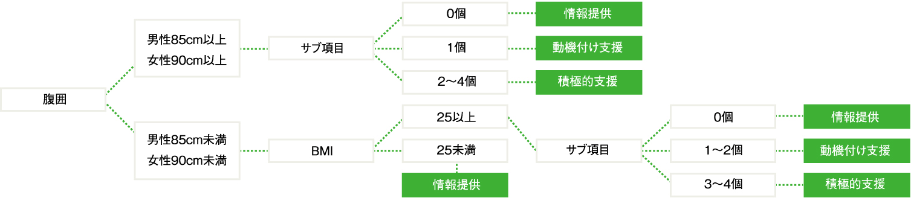

受診後のサポート
□コンサルテーションについて紹介
健診データは、小倉記念病院のデータとして共有できます。健診で異常が見つかれば、各外来専門医へ紹介可能です。その場合紹介料は頂きません。
□特定保健指導紹介
メタボと言われて落ち込む必要はありません。お得な情報を持ち帰るチャンスです。体組成計による筋肉量や体脂肪率の測定、肺年齢のチェック、ゲーム感覚で行える食事診断など楽しいツールを揃えています。
支援は面談・電話・Eメールなど柔軟に対応します。官公庁など多数の企業と契約があり、多くの方がご利用されています。
貴方も理想のボディを手に入れるために一緒に頑張りましょう。（契約企業についてはお問い合わせください）
特定保健指導について
□太っていればメタボなの？
内臓脂肪型肥満に加え、高血糖、高血圧、脂質異常のうち、2つ以上をあわせもった状態を、メタボリックシンドローム（内臓脂肪症候群）といいます。“肥満＝メタボ”ではありません。
メタボリックシンドロームの判定（厚生労働省）は、①～③の該当が、
２項目以上→メタボ基準該当者 １項目以上→メタボ予備軍 ０項目→メタボ非該当
内臓脂肪型の肥満
男性 腹囲85cm以上
女性 腹囲90cm以上
①高血糖 ： 血糖（空腹時）110mg/dl 以上
②高血圧 ： 血圧（上）130mmHg以上
または/かつ血圧（下）85mmHg以上
③脂質異常 ： 中性脂肪値150mg/dl以上
または/かつHDLコレステロール値40mg/dl未満
※治療中の項目は数値に関わらず該当となります。
□内臓脂肪って悪いもの？
食事の摂りすぎや運動不足で、余ったエネルギーは、中性脂肪となって細胞に蓄えられます。その中でも、腸を支える腸間膜などに蓄えられたものを内臓脂肪といいます。正常な脂肪組織は動脈硬化を防ぐ物質を多く分泌しますが、中性脂肪を蓄えて、肥大した脂肪組織は、血圧を上昇、動脈硬化を促進、インスリン（血糖降下に関わるホルモン）の効きを悪くする物質などを、多く分泌してしまいます。
□なぜ腹囲が基準なの？
特定健康診査（いわゆるメタボ健診）は、膨らんだ脂肪組織を正常に戻し、高血圧・糖尿病・脂質異常症になる“前”の段階から予防するために、平成20年度から始まりました。腹囲は、内臓脂肪をCTで計測する代わりの、手軽な手段として用いられており、生活習慣病のリスクが高まる値として、内臓脂肪面積100c㎡（該当腹囲：男性85cm 女性 90cm）が基準となっています。
□保健指導を受けるのはどんな人？
メタボリックシンドロームになるリスクの高い人が、特定保健指導の対象となります。薬で治療中の方は、基本的には支援の対象外です。かかりつけ医では薬をもらうだけでなく、生活習慣についての相談をしましょう。
【特定保健指導の選定基準】
【サブ項目】
◎高血糖：血糖(空腹時) 100mg/dl 以上 またはHbA1c（NGSP）5.6％以上
◎高血圧：血圧（上）130mmHg以上 または血圧（下）85mmHg以上
◎脂質異常：中性脂肪値150mg/dl以上 またはHDLコレステロール値40mg/dl未満
◎喫煙
□保健指導って厳しいの？
健康診断は生活を振り返るチャンスです。専門家からの励ましやサポートを受けながら、一緒に生活改善に取り組みましょう。
食 事
食品の偏りが少ないメニューを！
- ◎１食あたり
- エネルギー：500～800kcal
- 塩分：３g
- 野菜：生で両手１杯
- ◎１日あたり
- 頻度：３食
- 果物：握り拳１つ分
運 動
数分の空き時間で筋トレを！ 下半身がお勧め。
有酸素運動は無理せず、習慣化することが大事！
まずは５分から始めましょう！
- 【体重80kgの場合】
- 散 歩20分で 84kcal消費
- 自転車20分で 112kcal消費
タバコ
ニコチンの代わりとなるリラックス方法を探しましょう！
お 酒
適量を守り、休肝日を設けて、１週間で調整を。
菓 子
我慢はストレス。１日200kcal以内で楽しみましょう！
【当院での特定保健指導例】
まずは、理想の体にするための計画をたて、３～６ヵ月の間に電話やE mail、対面での計画修正・アドバイスを行なっていきます。
理想ボディを手に入れる計画
電話・E mail 対面・計画修正・アドバイス
３～６ヵ月
路線確認・計画修正